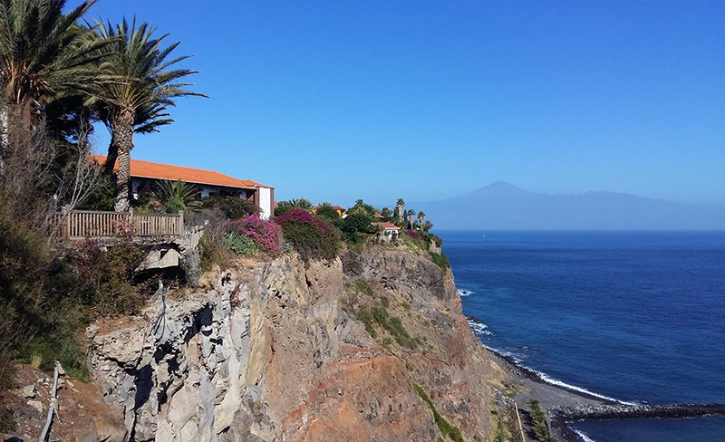

Parador de la Gomera
Urlaub auf den Felsen hoch über dem Meer
Das Hotel Parador auf La Gomera mit gehobenem Komfort, ruht in seinem typisch kanarischen Baustil oberhalb der Inselhauptstadt San Sebastian auf einem Fesvorsprung auf etwa sechzig Meter über dem Meer.

Herrlicher Panoramapool
Das komfortable Hotel präsentiert sich mit idyllischen Innenhöfen, einladenden Aufenthaltsräumen, subtropischer Gartenanlage und mit einem grandiosem Panoramapool. Das stilvolle Hotel Parador de la Gomera liegt auf einem Felsplateau und bietet einen herrlichen Ausblick bis nach Teneriffa.
Idyllische Innenhöfe
Das Hotel ist in einem kanarischen Gebäude aus der kolumbianischen Zeit untergebracht, mit hölzernen Kassettendecken und großen begrünten Innenhöfen. Es befindet sich in San Sebastián, Hauptstadt und Eingangshafen der Insel. Es war der letzte Hafen, den Christoph Kolumbus vor seiner Reise zur Entdeckung Amerikas ansteuerte.
Beste regionale Küche
Sie genießen regionale und lokale Küche in einzigartigen Räumlichkeiten. Unsere Küche ist stark mit den Orten verbunden und präsentiert beste Gastronomie aus den verschiedenen spanischen Regionen. Als Pioniere der lokalen Küche verwenden wir, falls möglich, lokale Produkte von den Kanarischen Inseln.